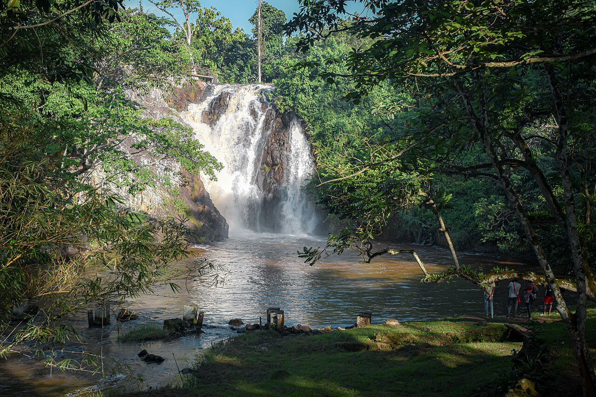
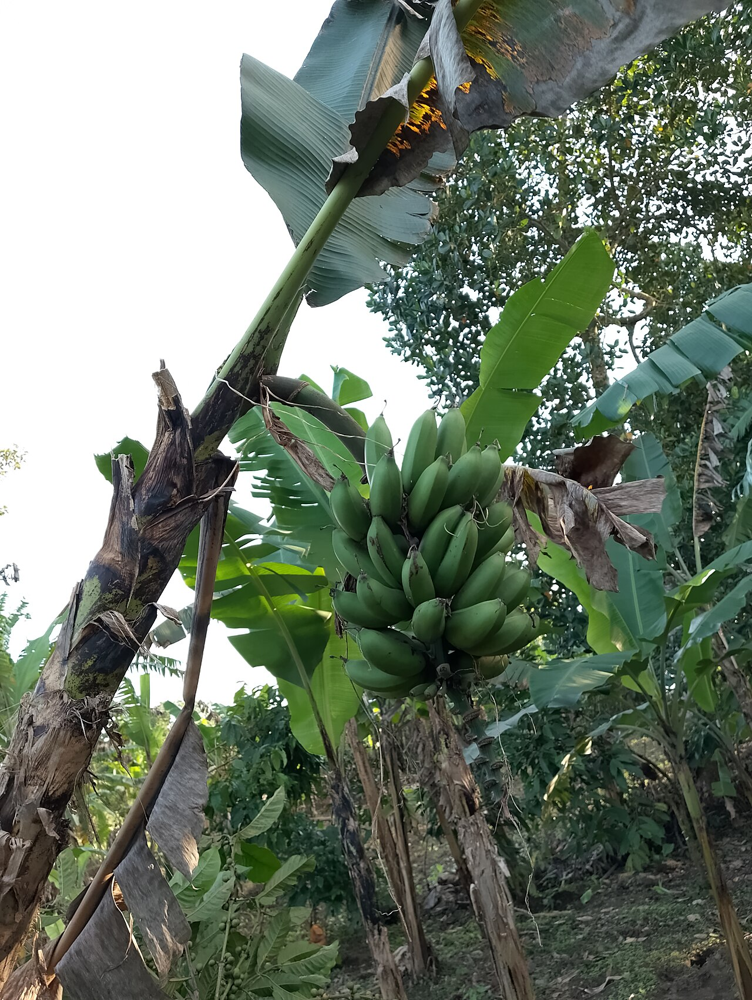

Places
Things to see & do

Top pick · Mukono District
Sezibwa Falls
A sacred site in Buganda tradition, with a legend of twin rivers. Walk the forest trail, see the falls up close and learn about the shrines from local guides.
⏱ 2–3 hrs🎟 Entry fee🚗 On the Kayunga road
 Nature
NatureRock pools & forest trail
A short, shaded walk to the rocks above the falls.
 Farms
FarmsPineapple farm walk
See how pineapples are grown and taste them straight from the field.
 Food
FoodCook luwombo with a local family
Learn to wrap and steam a meal in banana leaves, then eat together.

FarmsVillage homestay
Stay overnight with a family and join the day's farm work.
 Culture
CultureBuganda heritage day trip
Combine a Kasawo visit with Buganda's royal heritage sites near Kampala.
 Food
FoodRoadside food trail
Roasted gonja, fresh fruit and snacks along the main road.